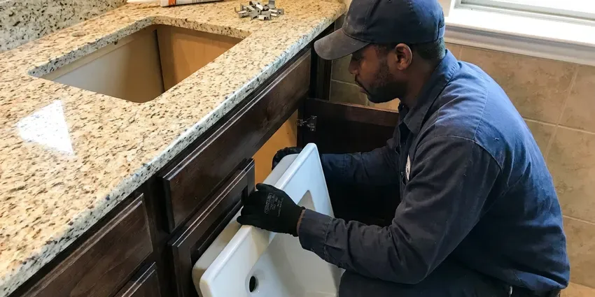

Shower Repair in Plymouth, MN
CNV Plumbing fixes showers in Plymouth, MN from the head down to the drain, with a flat price before we start.
- Leak Detection Available
- Licensed and Insured
- Same-Day Shower Repair
- Tub Protected During Work
Fix That Shower Drip in Plymouth, MN
Tell us what the shower is doing and we will give you a flat price.
Shower Valve Repair for Plymouth, MN Homes
CNV Plumbing handles shower repairs in homes all over Minnesota. A drip after shutoff, a handle that will not turn smoothly and water that drifts cold mid-shower are the three calls we get most, and each one has a clear fix. The tile stays put.
Our expertise includes:
- Dripping Shower Valve Repair
- Shower Drain Clog Clearing
- Pressure-Balance and Thermostatic Valve Repair

Additional Bathroom Plumbing Services in Plymouth, MN
From toilets to showers, our bathroom plumbing team in Plymouth, MN handles repairs, installs, and upgrades with tidy, code-compliant work.


Customers
Why Choose CNV Plumbing for Shower Repair in Plymouth, MN?
Quick fixes come back. A plumber who replaces only the O-rings on a scored cartridge will be back in a few months, so we replace the whole cartridge with a genuine part and grease the valve body. That ends the drip for good.
- Local Know-How, We know how local conditions wear on valves and drains in Plymouth.
- Hidden Leak Checks, Moisture testing spots wet framing behind tile before they spread.
- Trained Techs, Each tech is trained on both pressure-balance and thermostatic valves.
Citywide Coverage
No part of Plymouth is too far for us. We route trucks by area each morning, so the plumber headed your way is usually finishing a job a few streets over. Most windows are two hours.
Experienced Team
We have repaired everything from 1950s three-handle valves to modern thermostatic and digital showers. That range matters, because older homes often have valves that newer plumbers have never seen and parts that take some hunting. We know the parts houses.
Safety-First Approach
Water off first, every time. Before the cartridge is pulled, the water gets shut off and the lines drained, and a stop that leaks means we go to the main. Then the drain gets covered.
Trusted Certified Plymouth Plumbing Services Professionals
At CNV Plumbing, we take pride in licensed, certified plumbing services throughout Plymouth, MN. Credentials matter in this trade. Our plumbers hold recognized industry credentials, and they follow strict safety and quality rules on every repair, installation and maintenance call we run.
Call Us Now PHCC Plumbing Contractor Recognition
PHCC Plumbing Contractor Recognition Better Business Bureau (BBB) Accreditation
Better Business Bureau (BBB) Accreditation Angi Certified Pro
Angi Certified Pro ISO 9001 Quality Management Certification
ISO 9001 Quality Management CertificationShower Repairs We Handle in Plymouth, MN
Showerhead Repair and Replacement in Plymouth
Showerheads clog from the inside out. Minerals collect behind the face and inside the restrictor, which turns the spray patchy or weak with the valve fully open. A vinegar soak can work. When it does not, we install a new head with soft rubber nozzles that you can wipe clean with a thumb.

Hot Water Pressure Problems in Plymouth, MN
Weak hot water with strong cold usually rules out the showerhead. The problem is on the hot side, either sediment in the water heater outlet, a partly closed valve at the heater or a cartridge whose hot port is packed with scale. Each side gets tested. If the sinks have good hot pressure and the shower does not, the cartridge is the first suspect.
Moen and Delta Shower Repair in Plymouth, MN
Moen 1222 and Delta RP46074 cartridges sit inside a huge share of the showers we open. Moen Posi-Temp showers take the 1222, and Delta Monitor 13 and 14 showers take the RP46074, and both wear out on a fairly regular clock. Both ride on our trucks. Many of these carry a lifetime warranty to the original owner.
Clogged Shower Drain Clearing in Plymouth, MN
Hair and soap scum cause nearly every slow shower drain. A hand auger through the strainer clears most of them, and a drum machine handles clogs that have moved past the trap. Drain cleaner usually misses the clog. We recommend a hair catcher once it is clear.
Shower Valve Replacement in Plymouth
Temperature that swings or a handle that fights you points to the valve. When the body is corroded or the brand stopped making cartridges for it, we replace the valve, usually through a small access panel behind the shower wall so the tile stays put. New valves include pressure balancing. You can step up to a thermostatic valve for tighter control.
Mixing Valve Repair in Plymouth
Mixing valves blend hot and cold inside the wall. Over time the cartridge or spool sticks, and you get a shower that will not stay at one temperature or a handle that turns past where it should before the water warms up. A new cartridge usually fixes it. Valves with no parts left get a replacement plan and an honest look at the tile.
Commercial Shower Service in Plymouth
Hotels and dorms cannot wait days on a shower. With commercial cartridges on board, we fix rooms one at a time so the rest stay open. We can work nights. Each repaired valve gets its limit stop set and tested before we move on.

Shower Handle Leak Repair in Plymouth
Leaks at the handle or behind the trim plate are easy to miss. Water running down the inside of the trim gets behind the tile at the valve opening, and over a few months it soaks the drywall around the valve without ever showing on the shower side. The trim comes off first. It is usually a loose bonnet nut or a worn O-ring.
Shower Repair Near Me in Plymouth, MN
Searching shower repair near me in Plymouth, MN usually means the drip is keeping you up. Same-day visits are common, and the plumber shows up with the usual cartridges on board. CNV Plumbing works all over town. Expect a two-hour window.
Booking is simple. Call (612) 712-9569 with the brand on your shower handle or a photo of the trim. We look up the cartridge while you are on the phone and tell you whether it is on the truck or needs ordering. Then we set a time.
CNV Plumbing at a Glance
- Fully licensed plumbing team covering Plymouth, MN
- 24/7 emergency service with same-day scheduling
- Clear written estimates, no hidden fees
- 4.8-star rated by 501+ Minnesota customers
Plymouth Map
Plymouth Information
- Population
- 77,648
- Area codes
- 763/952/612
- Service area
- Plymouth and towns within a 40 mile drive
- Nearby
- Minnetonka, Maple Grove, St. Louis Park, Brooklyn Park
Scale buildup shortens water heater life and clogs aerators, which is why water softeners are so common in the state. Freeze and thaw movement can shift older sewer laterals, and tree roots often find their way into the joints. Both show up in a shower as worn cartridges and drain joints that work loose in Plymouth, MN homes.
Talk to a Plumber
Call CNV Plumbing for reliable plumbing work done by licensed pros in Plymouth, MN.
Our Specialized Plumbing Services in Plymouth, MN
At CNV Plumbing, we handle the full list of plumbing services across Plymouth, MN. From leak detection to full system installs, our team works fast and charges fair prices on homes and commercial properties alike. Explore our core services below:


How a Shower Repair Goes in Plymouth, MN
Every shower repair in Plymouth, MN runs the same way.
Call and Describe
Call (612) 712-9569 and describe the drip, low pressure or temperature swing. We give you a time window.
Diagnose the Shower
We inspect the valve, diverter and drain and test for hidden leaks. You approve a flat price first.
Repair and Test
We replace worn parts and set anti-scald limits. Then we test pressure and temperature and check for leaks.
Frequently Asked Questions About Shower Repair in Plymouth
Simple fixes run $100 to $250. Bigger repairs like replacing a shower valve usually fall between $300 and $800 with parts and labor, depending on how the valve is reached and whether tile has to come off. Access drives the price. We quote a flat number before starting.
We repair Moen, Delta, Kohler, Pfister, American Standard, Symmons and many others. We carry the usual cartridges.
Check the other side of the wall for stains or soft drywall. Loose tile, a musty smell or spots on the ceiling below are clues we confirm with a meter.
Loose valve connections and failed grout cause most of them. A cracked pan or a leak at the arm threads can also soak the wall while the tile looks fine. We find it with a meter. Then we fix the source with as small an opening as possible.
One to three hours covers most. A cartridge swap or a drain clearing usually finishes in about an hour, while a valve replacement that needs wall access can take half a day. We tell you up front.
Cartridge and showerhead swaps usually need no permit. Relocating supply lines or replacing long sections of pipe behind the tile can require one, depending on the rules where you live. We sort that out first.
A drain screen catches most of the hair. Soak the head in vinegar now and then, avoid chemical drain cleaners and deal with drips early. Scale buildup shortens water heater life and clogs aerators, which is why water softeners are so common in the state. Softened water slows the scale.
It can, if the clog is past the trap. A blockage deeper in the branch or main line can slow the sinks, gurgle the toilet and, in bad cases, push wastewater back up through the lowest drain in the house. Fix it early.
What People Are Saying About Our Plumbing Experts?

Diane F.
My kitchen faucet had dripped for months and I finally got tired of hearing it at night. CNV Plumbing came out the next morning, replaced the cartridge and the O rings, and tightened a loose base that was letting water under the sink.
Faucet Repair · St. Louis Park, MN
Jessica T.
We were adding a gas range in a kitchen remodel and needed a new line run from the meter. The plumber pulled the permit, ran the pipe through the crawl space, and had it inspected and approved within the week.
Gas Line Repair · Maple Grove, MN
Daniel K.
A pipe burst in the garage ceiling at 11 at night. Someone answered on the second ring, and the plumber was in my driveway about fifty minutes later. He shut off the main, cut out the split section, and had water back on before 2 am.
Emergency Plumbing · Plymouth, MN
Robert G.
The camera showed a full break in our clay sewer line near the street. CNV Plumbing replaced it with a trenchless pipe burst, so the only digging was two small pits in the yard. They let us watch the footage before and after.
Sewer Line Replacement · St. Louis Park, MNKaren W.
After our third pinhole leak in copper, we stopped patching. CNV Plumbing gave us a written plan room by room and repiped the house in PEX while we stayed in it. The crew covered our floors every morning and cleaned up every night.
Repiping · Plymouth, MN
Lisa C.
Water was pouring out from under the washing machine on a holiday weekend. CNV Plumbing talked me through closing the valves over the phone and had a plumber at the house within ninety minutes. It was a burst fill hose.
Emergency Plumbing · Plymouth, MN